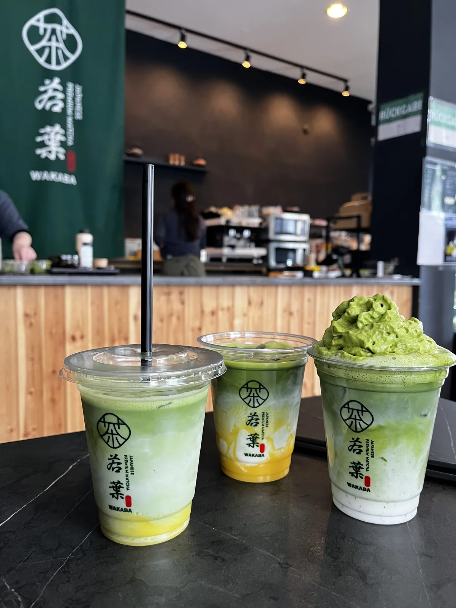

Ontdek wat andere missen
Over Düsseldorf
De hoofdstad van Noordrijn-Westfalen aan de Rijn telt ruim 650.000 inwoners. Met de regio is het een van de grootste economische centra van Duitsland.
Mode, kunst, Japanse cultuur en de Rijnpromenade maken Düsseldorf tot een stad die je het beste ontdekt voorbij de bekende routes.
Over Düsseldorf
Ontdek Düsseldorf voorbij de bekende plekken
Hidden gems, lokale tips en onverwachte routes
Beyond Düsseldorf laat je de stad zien zoals locals haar kennen. Niet alleen de bekende trekpleisters, maar juist creatieve buurten, rustige plekken, kleine cafés, street art en bijzondere verhalen.
Deze website helpt bezoekers om verborgen parels van Düsseldorf te vinden en de stad op een andere manier te beleven.
Bekijk hidden gems